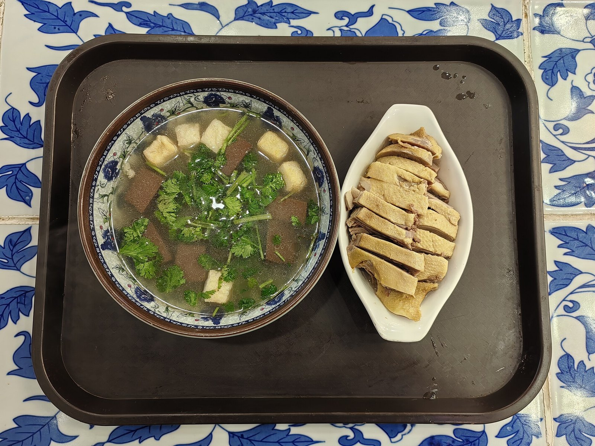
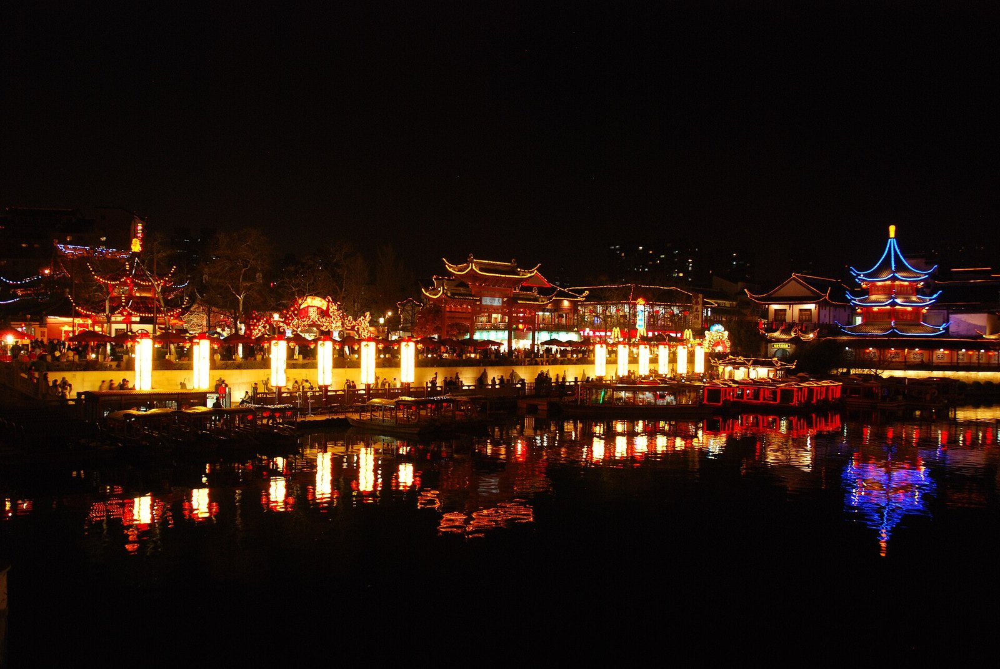

家乡：南京
我是南京人。别人一提南京都是六朝古都、夫子庙，我第一反应其实是鸭血粉丝汤。
夫子庙白天看建筑，晚上看灯。灯笼一亮，秦淮河上还有画舫慢慢开过去，人挺多的，但确实是好看。
盐水鸭皮白肉嫩，鸭血粉丝汤冬天来一碗最舒服。这两样是我每次回家都要吃的。



我是南京人。别人一提南京都是六朝古都、夫子庙，我第一反应其实是鸭血粉丝汤。
夫子庙白天看建筑，晚上看灯。灯笼一亮，秦淮河上还有画舫慢慢开过去，人挺多的，但确实是好看。
盐水鸭皮白肉嫩，鸭血粉丝汤冬天来一碗最舒服。这两样是我每次回家都要吃的。

